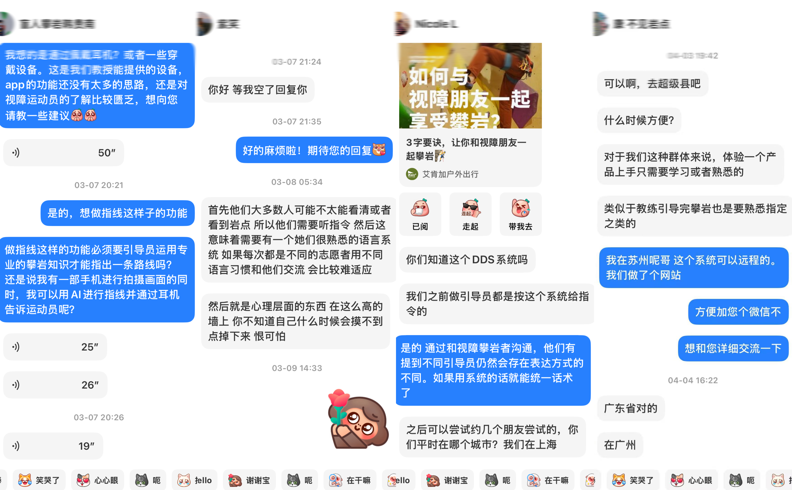
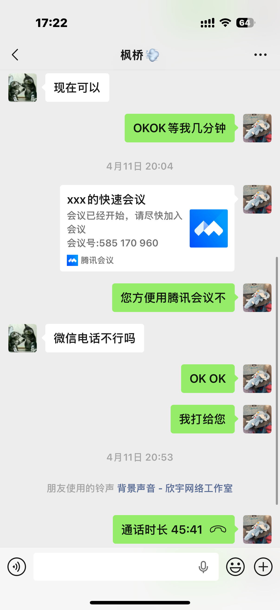
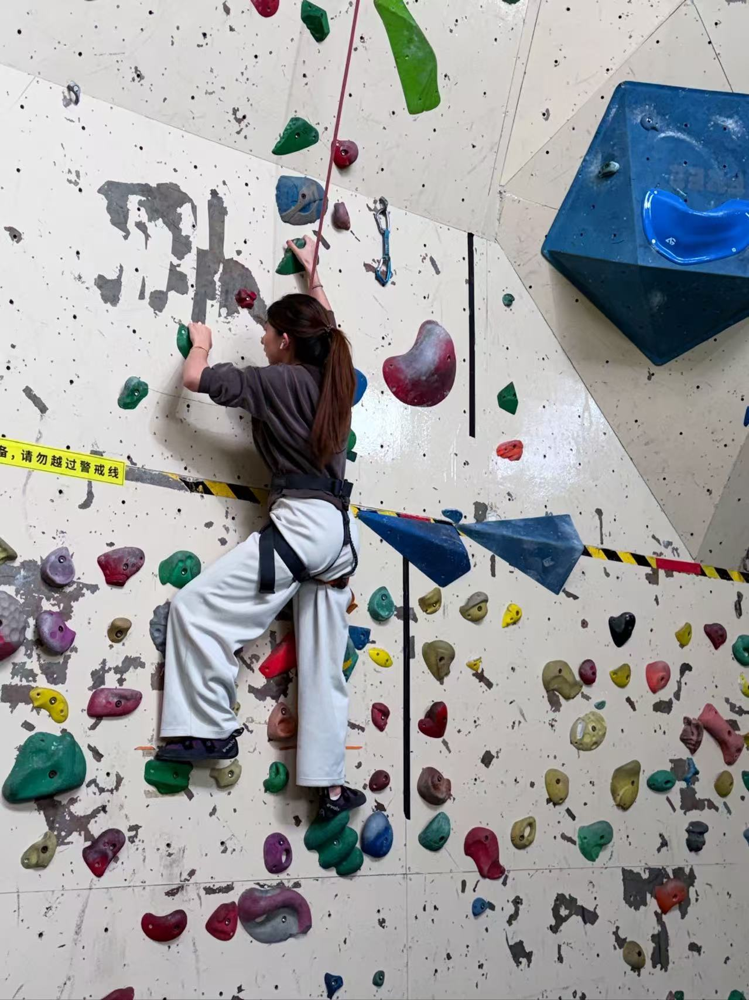

Usability testing setup, tasks, key findings, iterative refinements, final reflection, AI disclosure, and references.
TestingRefinementReflecting on inclusion, uncertainty, and responsible AI use in HoldLight
Usability Testing Setup
Usability Testing Setup
We evaluated HoldLight through a combination of early communication, interview-based feedback, internal prototype testing, and onsite climbing trials. Our testing setup gradually moved from discussion and preparation to a more realistic climbing environment involving the tester, guide, tripod-mounted phone, and belayer support.
Final onsite testing setup with tester, guide, tripod-mounted phone, and belayer support in a top-rope climbing environment.
Testing Evidence
Process Evidence
The evidence below follows the testing process from recruitment and preparation to internal checking and onsite climbing trials. Communication screenshots are treated as anonymized recruitment and follow-up evidence, so they are kept as supporting material rather than used as the main visual focus.
Step 1

Early communication helped us clarify core issues such as communication style, route guidance consistency, and the importance of safety and trust.
Early communication with visually impaired climbing contacts
We began by reaching out to visually impaired climbing-related contacts to understand initial concerns, practical needs, and whether a guided climbing support system would be meaningful in real use.
Design insight: This stage highlighted the need for clear, familiar, and consistent guidance language.
Step 2

This follow-up exchange supported recruitment and helped move from informal contact to a more structured interview and testing plan.
Interview scheduling and follow-up discussion
We then arranged and carried out a follow-up conversation with a visually impaired participant to better understand expectations, practical constraints, and suitable ways of communicating during testing.
Design insight: This step helped us refine how to approach testing and communication in a respectful and practical way.
Step 3
Internal testing allowed the team to quickly verify the clarity of instructions, screen layout, and the feasibility of scan-based interaction.
Internal prototype testing
Before testing with external participants, we used internal trials to check whether the interface, guidance panel, and route-related interaction could be understood and operated on mobile.
Design insight: This stage helped us identify interaction issues before moving into more realistic climbing scenarios.
Step 4

This trial helped us connect interface design with the realities of movement, balance, and hold selection on the wall.
Participant climbing trial
We observed a participant trying the climbing task in practice in order to understand body movement, hold reachability, and how route guidance should align with actual climbing behaviour.
Design insight: Testing in motion revealed the importance of short, well-timed guidance and a realistic understanding of physical climbing constraints.
Step 5
This was the most complete testing setup and gave us the clearest view of how HoldLight could operate in a real climbing session.
Final full-context onsite test
Our final testing setup brought together the key roles and equipment needed in a realistic climbing context: the participant, guide, tripod-mounted phone, and belayer support in a top-rope environment.
Design insight: This final setup provided the strongest evidence for evaluating route guidance in a realistic environment.
Testing Tasks
Understand the route guidance flow from scan entry to route preview.
Try the scan-based interaction on a mobile device.
Follow spoken or guided route cues during preparation and movement.
Evaluate whether the interface supports climbing in context.
Reflect on clarity, timing, and confidence during route following.
Key Findings
Finding 1
Users needed a clearer scan-first flow.
The internal prototype check showed that scanning had to be the first visible action, not one option among many dashboard features.
Design Implication
Make route scanning the central entry point before any detailed guidance appears.
Finding 2
Long instructions increased cognitive load.
Interview feedback and climbing observation both suggested that longer guidance becomes harder to process when the climber is preparing, balancing, or moving.
Design Implication
Shift support toward pre-climb preview and brief in-climb cues.
Finding 3
Real climbing context made timing more important.
The participant climbing trial connected interface decisions with body movement, reachability, balance, and the short moments when guidance can be useful.
Design Implication
Keep cues short, well-timed, and connected to physical climbing constraints.
Finding 4
Guidance depends on real support conditions.
The final onsite setup showed that HoldLight has to work alongside guide coordination, tripod placement, and belayer support rather than pretending the app works in isolation.
Design Implication
Design route guidance as part of a supported climbing setup.
Finding 5
Simpler interaction supported blind and low-vision use.
Across communication, interview, and prototype evidence, feature-heavy layouts felt less useful than a direct flow focused on scanning, preview, repeat, and clear fallback.
Design Implication
Reduce optional controls and protect the core guidance flow.
Iterative Refinement / Before & After
Scan screen alignment
Before
Scan entry and camera frame were not prominent enough.
After
Scan became the primary action with clearer framing guidance.
Change made
Raised scan priority and added clearer framing guidance.
Impact
Users could understand where to begin more quickly.
Settings simplification
Before
Many settings competed with the main climbing task.
After
Core settings were grouped into simple text, contrast, and audio controls.
Change made
Reduced settings into fewer, clearer categories.
Impact
Preparation became faster and less distracting.
Text contrast / readability
Before
Dense decoration made some content feel harder to scan.
After
Important explanation areas use calmer cards, normal case, and stronger contrast.
Change made
Reduced all-caps body text and separated reading sections from decorative elements.
Impact
The portfolio and prototype became easier to read without losing the visual identity.
Guidance phrasing
Before
Guidance was too explanatory during the climb.
After
Guidance became short, direction-first, and repeatable.
Change made
Shifted support toward pre-climb preview and shortened live audio cues.
Impact
The interaction model better preserved climbing rhythm.
Final Reflection
Human-Centric Impact
HoldLight began from a simple recognition: indoor climbing is still organised around visual certainty. Route preview, hold identification, and movement planning are usually assumed to be seen before they are acted on. For blind and low-vision climbers, this creates an informational barrier as much as a physical one, limiting access to confidence, independence, and belonging within the activity.
Social / Ethical Implications
Ethically, the question was not how to deliver the most guidance, but how to support the climber without displacing agency or overstating what the system could reliably know. In a climbing context, guidance that is too dense, too continuous, or too certain can interrupt rhythm, increase cognitive load, and imply a level of safety assurance that technology alone cannot guarantee.
Project Limitations
The current prototype remains an early implementation. Route recognition requires further real-gym validation, camera framing still depends partly on assistant support, and audio cue comprehension may vary in noisy climbing environments. The project should not be treated as a complete safety system.
Future Work
Future development should include testing with blind and low-vision climbers where ethically and practically possible, stronger uncertainty handling, more robust vision evaluation, haptic feedback exploration, and deeper integration with climbing gym workflows.
AI Technical Reflection
Used For
Assistant support
AI was used as an assistant for code scaffolding, debugging, wording refinement, and layout suggestions. It helped speed up implementation and improve clarity, but outputs were reviewed before use.
Not Used For
Core judgement
Core design decisions, user research interpretation, and human-centric justification were made by the group. AI did not determine the project motivation, research findings, or ethical position.
Prompt Categories
Examples
HTML/CSS layout restructuring.
Responsive and accessibility checks.
Bug diagnosis and code explanation.
Short wording refinement for portfolio sections.
Verification + Ethics
Review process
Code was checked through manual navigation, responsive layout review, link checks, and accessibility-focused reading. Ethical use required verifying AI-generated suggestions, avoiding fabricated user evidence, and keeping accountability with the team.
References & AI Disclosure
Academic Papers
Braun et al. (2025) - Needs Assessment for an Assistance System for the Visually Impaired and Blind in Climbing and Bouldering.
Ramsay & Chang (2020) - Body Pose Sonification for a View-Independent Auditory Aid to Blind Rock Climbers.
Richardson et al. (2022) - Climb-o-Vision: A Computer Vision Driven Sensory Substitution Device for Rock Climbing.
Simone & Galatolo (2020) - Climbing as a Pair: Instructions and Instructed Body Movements in Indoor Climbing with Visually Impaired Athletes.
Commercial Products
KAYA.
Vertical-Life.
TopLogger.
RouteIt Indoor Bouldering.
AI Tools Used
AI coding assistant tools were used for code scaffolding, debugging, wording refinement, and layout suggestions. AI outputs were treated as provisional and reviewed by the group.
Image / Generation Disclosure
Current portfolio images use local project assets and placeholders. If image generation tools are used later, generated assets and prompts should be documented in the references or AI logs.